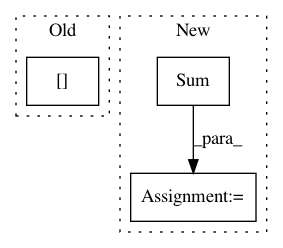

8648d437573e2e41b92b8fea13b4afe5e01851e8,baseline/tf/classify/training/eager.py,ClassifyTrainerEagerTf,_train,#ClassifyTrainerEagerTf#Any#Any#,76
Before Change
for features, y in pg(loader):
lossv = self.optimizer.update(self.model, features, y).numpy()
batchsz = int(y.shape[0])
report_lossv = lossv * batchsz
epoch_loss += report_lossv
epoch_div += batchsz
After Change
epoch_loss = tf.keras.metrics.Sum()
epoch_div = tf.keras.metrics.Sum()
nstep_loss = tf.keras.metrics.Sum()
nstep_div = tf.keras.metrics.Sum()
self.nstep_start = time.time()
@tf.function
def _train_step(inputs):
Replicated training step.
features, y = inputs
loss = self.optimizer.update(self.model, features, y)
batchsz = tf.cast(get_shape_as_list(y)[0], tf.float32)
report_loss = loss * batchsz
epoch_loss.update_state(report_loss)
nstep_loss.update_state(report_loss)
epoch_div.update_state(batchsz)
nstep_div.update_state(batchsz)
for inputs in pg(loader):
_train_step(inputs)
step = self.optimizer.global_step.numpy() + 1
if step % self.nsteps == 0:
metrics = self.calc_metrics(nstep_loss.result().numpy(), nstep_div.result().numpy())
self.report(
step, metrics, self.nstep_start,
"Train", "STEP", reporting_fns, self.nsteps
)
In pattern: SUPERPATTERN
Frequency: 3
Non-data size: 3
Instances
Project Name: dpressel/mead-baseline
Commit Name: 8648d437573e2e41b92b8fea13b4afe5e01851e8
Time: 2020-04-02
Author: dpressel@gmail.com
File Name: baseline/tf/classify/training/eager.py
Class Name: ClassifyTrainerEagerTf
Method Name: _train
Project Name: sympy/sympy
Commit Name: f0556f7b6806d21083c55752046cd7ecfcf1723d
Time: 2021-02-10
Author: harshityadav2k@gmail.com
File Name: sympy/concrete/products.py
Class Name: Product
Method Name: _eval_derivative
Project Name: albermax/innvestigate
Commit Name: e0f6dd06cc61043662ff9beee4a4996d434e45f5
Time: 2018-02-20
Author: alber.maximilian@gmail.com
File Name: innvestigate/tools/pattern.py
Class Name: PatternComputer
Method Name: __init__